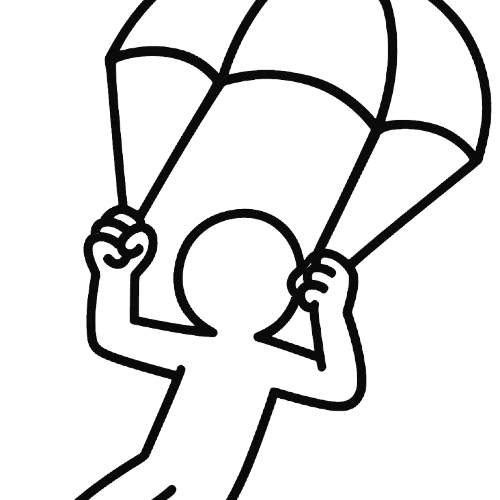

!DOCTYPE html>
<html lang="de">
<head>
  <meta charset="UTF-8">
  <title>Busroute ziehen und Drop berechnen</title>
  <style>
    body {
      margin: 0;
      background: #111;
      color: white;
      font-family: sans-serif;
      display: flex;
      flex-direction: column;
      align-items: center;
    }
    canvas {
      margin-top: 10px;
      border: 2px solid #333;
      border-radius: 10px;
      max-width: 95vw;
      height: auto;
      cursor: crosshair;
    }
    .controls {
      display: flex;
      gap: 10px;
      margin: 10px;
      position: fixed;
      top: 70px;
      background-color: #111;
      padding: 10px;
      border-radius: 10px;
      z-index: 100;
    }
    button {
      padding: 12px 24px;
      border-radius: 30px;
      background: #007bff;
      color: white;
      border: none;
      cursor: pointer;
      font-weight: bold;
      font-size: 16px;
      box-shadow: 0 2px 8px rgba(0, 0, 0, 0.3);
    }
    .header {
      display: flex;
      align-items: center;
      gap: 10px;
      position: absolute;
      top: 10px;
      left: 10px;
    }
  </style>
</head>
<body>
  <div class="header">
    <a href="index.html" style="display: flex; align-items: center; text-decoration: none; color: white;">
      
      <span style="font-weight: bold; font-size: 18px;">Home</span>
    </a>
  </div>
  <h2>Busroute ziehen und Drop berechnen</h2>
  <div class="controls">
    <button onclick="calculateDrops()">FIND BEST DROP</button>
    <button onclick="resetRoute()">🔄 Reset</button>
  </div>
  <canvas id="mapCanvas" width="900" height="900"></canvas>

  <script>
    const canvas = document.getElementById('mapCanvas');
    const ctx = canvas.getContext('2d');
    const img = new Image();
    img.src = 'fortnite-dropmap/assets/map.png';
    img.onerror = () => alert("Fehler: Karte konnte nicht geladen werden. Stelle sicher, dass der Pfad korrekt ist.");

    const dropmaps = JSON.parse(localStorage.getItem('dropmaps') || '[]');
    const editingIndex = parseInt(localStorage.getItem('editingDropmapIndex'));
    const dropmap = dropmaps[editingIndex];

    if (!dropmap || !dropmap.points) {
      alert("Keine gültige Dropmap gefunden. Bitte eine Dropmap erstellen.");
      window.location.href = 'index.html';
    }

    const route = [
      { x: 150, y: 150 },
      { x: 750, y: 750 }
    ];

    let scale = 1;
    let originX = 0;
    let originY = 0;
    let dragging = null;
    let offsetX, offsetY;
    let bestDropLine = null;

    img.onload = () => draw();

    canvas.addEventListener('wheel', e => {
      e.preventDefault();
      const delta = e.deltaY > 0 ? -0.1 : 0.1;
      const mouseX = (e.offsetX - originX) / scale;
      const mouseY = (e.offsetY - originY) / scale;
      scale = Math.min(Math.max(0.5, scale + delta), 3);
      originX = e.offsetX - mouseX * scale;
      originY = e.offsetY - mouseY * scale;
      draw();
    });

    canvas.addEventListener('mousedown', e => {
      const x = (e.offsetX - originX) / scale;
      const y = (e.offsetY - originY) / scale;
      dragging = 'map';
      offsetX = e.clientX - originX;
      offsetY = e.clientY - originY;
      route.forEach((point, i) => {
        if (Math.hypot(point.x - x, point.y - y) < 12) {
          dragging = i;
          offsetX = point.x - x;
          offsetY = point.y - y;
        }
      });
    });

    canvas.addEventListener('mouseup', () => dragging = null);

    canvas.addEventListener('mousemove', e => {
      if (dragging === null) return;
      if (dragging === 'map') {
        originX = e.clientX - offsetX;
        originY = e.clientY - offsetY;
        draw();
      } else {
        const rect = canvas.getBoundingClientRect();
        const x = (e.clientX - rect.left - originX) / scale;
        const y = (e.clientY - rect.top - originY) / scale;
        route[dragging].x = x + offsetX;
        route[dragging].y = y + offsetY;
        draw();
      }
    });

    function drawArrowLine(start, end) {
      const dx = end.x - start.x;
      const dy = end.y - start.y;
      const len = Math.hypot(dx, dy);
      const steps = Math.floor(len / 30);
      const angle = Math.atan2(dy, dx);
      for (let i = 0; i < steps; i++) {
        const x = start.x + dx * (i / steps);
        const y = start.y + dy * (i / steps);
        ctx.save();
        ctx.translate(x, y);
        ctx.rotate(angle);
        ctx.beginPath();
        ctx.moveTo(-5, -5);
        ctx.lineTo(5, 0);
        ctx.lineTo(-5, 5);
        ctx.closePath();
        ctx.fillStyle = '#ffffff';
        ctx.fill();
        ctx.restore();
      }
    }

    function draw() {
      canvas.width = 900;
      canvas.height = 900;
      ctx.setTransform(1, 0, 0, 1, 0, 0);
      ctx.clearRect(0, 0, canvas.width, canvas.height);
      ctx.setTransform(scale, 0, 0, scale, originX, originY);
      ctx.drawImage(img, 0, 0, 900, 900);

      drawArrowLine(route[0], route[1]);

      route.forEach(p => {
        ctx.fillStyle = '#000';
        ctx.beginPath();
        ctx.arc(p.x, p.y, 10, 0, Math.PI * 2);
        ctx.fill();
        ctx.strokeStyle = '#fff';
        ctx.lineWidth = 2;
        ctx.stroke();
      });

      dropmap.points.forEach(p => {
        ctx.fillStyle = 'yellow';
        ctx.beginPath();
        ctx.arc(p.x, p.y, 6, 0, Math.PI * 2);
        ctx.fill();
        ctx.strokeStyle = 'black';
        ctx.lineWidth = 2;
        ctx.stroke();
      });

      if (bestDropLine) {
        const { best, bestDrop } = bestDropLine;
        ctx.fillStyle = 'cyan';
        ctx.beginPath();
        ctx.arc(best.x, best.y, 8, 0, Math.PI * 2);
        ctx.fill();
        ctx.stroke();

        ctx.strokeStyle = 'cyan';
        ctx.setLineDash([5, 5]);
        ctx.beginPath();
        ctx.moveTo(best.x, best.y);
        ctx.lineTo(bestDrop.x, bestDrop.y);
        ctx.stroke();
        ctx.setLineDash([]);
      }
    }

    function resetRoute() {
      route[0] = { x: 150, y: 150 };
      route[1] = { x: 750, y: 750 };
      bestDropLine = null;
      draw();
    }

    function calculateDrops() {
      if (!dropmap || !dropmap.points || dropmap.points.length === 0) {
        alert("Keine Drops vorhanden zum Berechnen.");
        return;
      }

      const dx = route[1].x - route[0].x;
      const dy = route[1].y - route[0].y;
      const len = Math.hypot(dx, dy);
      const unitX = dx / len;
      const unitY = dy / len;

      let best = null;
      let bestDist = Infinity;
      let bestDrop = null;

      dropmap.points.forEach(p => {
        const px = p.x - route[0].x;
        const py = p.y - route[0].y;
        const proj = px * unitX + py * unitY;
        const projPoint = {
          x: route[0].x + unitX * proj,
          y: route[0].y + unitY * proj
        };
        const dist = Math.hypot(projPoint.x - p.x, projPoint.y - p.y);
        if (dist < bestDist) {
          bestDist = dist;
          best = projPoint;
          bestDrop = p;
        }
      });

      if (best) {
        bestDropLine = { best, bestDrop };
        draw();
      }
    }
  </script>
</body>
</html>
